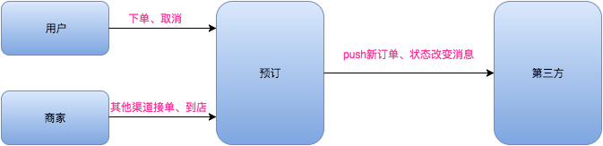
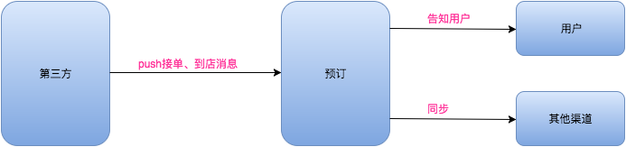
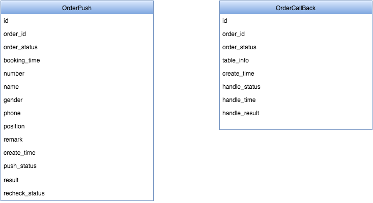
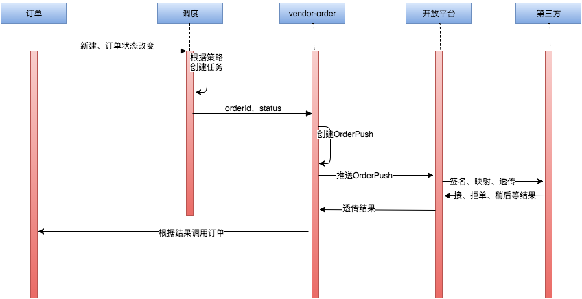
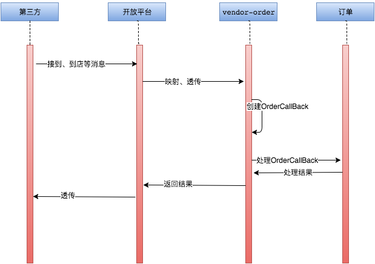

ERP直连项目设计
一、背景
预订订单会通过多种渠道进行分发，dispatch模板负责分发策略，对接各渠道模块(如声讯平台、短信平台等)，渠道模块执行实际的分发。
目前需要新增渠道，通过开放平台推送给ERP厂商，所以需要设计新的渠道模块去支撑订单分发任务的执行，即开放平台 - 订单（resv-vendor-order，简称vendor-order）模块。
二、主要业务过程
1.push消息（新订单、订单状态改变）
2.接收回调消息（被告知接单、拒单、到店、未到店等）
三、领域设计
vendor-order主要push订单消息以及接受第三方订单回调消息，因此两个核心领域对象：请求消息 & 回调消息，系统内的主要操作，都是基于这两种消息进行执行、重试的。
四、核心流程检验
1.push
2.callback
五、服务质量关注点
1.OrderPush高可用
重试：根据执行状态status，由job驱动进行重试（10秒一次），防止第三方服务间歇性不可用
2.OrderPush高一致
补偿（本次不做，第三方未提供查询订单状态接口）：根据recheck_status检查推送后的订单状态是否符合预期，不符合时重试。
3.整体服务高可用
业务打点、监控